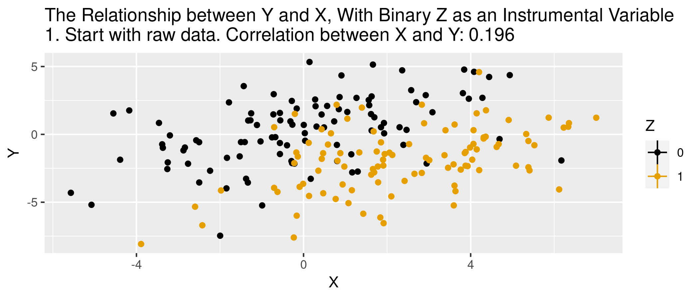

Instrumental Variables: Part I
Formal IV Assumptions
Key assumptions
- Exclusion: Instrument is uncorrelated with the error term
- Validity: Instrument is correlated with the endogenous variable
- Monotonicity: Treatment more (less) likely for those with higher (lower) values of the instrument
Assumptions 1 and 2 sometimes grouped into an only through condition.
Exclusion
Conley et al (2010) and “plausible exogeneity”, union of confidence intervals approach
- Suppose extent of violation is known in \(y_{i} = \beta x_{i} + \gamma z_{i} + \varepsilon_{i}\), so that \(\gamma = \gamma_{0}\)
- IV/TSLS applied to \(y_{i} - \gamma_{0}z_{i} = \beta x_{i} + \varepsilon_{i}\) works
- With \(\gamma_{0}\) unknown…do this a bunch of times!
- Pick \(\gamma=\gamma^{b}\) for \(b=1,...,B\)
- Obtain \((1-\alpha)\) % confidence interval for \(\beta\), denoted \(CI^{b}(1-\alpha)\)
- Compute final CI as the union of all \(CI^{b}\)
Exclusion
Kippersluis and Rietveld (2018), “Beyond Plausibly Exogenous”
- “zero-first-stage” test
- Focus on subsample for which your instrument is not correlated with the endogenous variable of interest
- Regress the outcome on all covariates and the instruments among this subsample
- Coefficient on the instruments captures any potential direct effect of the instruments on the outcome (since the correlation with the endogenous variable is 0 by assumption).
Validity
Just says that your instrument is correlated with the endogenous variable, but what about the strength of the correlation?

Why we care about instrument strength
Recall our schooling and wages equation, \[y = \beta S + \epsilon.\] Bias in IV can be represented as:
\[Bias_{IV} \approx \frac{Cov(S, \epsilon)}{V(S)} \frac{1}{F+1} = Bias_{OLS} \frac{1}{F+1}\]
- Bias in IV may be close to OLS, depending on instrument strength
- Bigger problem: Bias could be bigger than OLS if exclusion restriction not fully satisfied
Testing strength of instruments
Single endogenous variable
- Stock & Yogo (2005) test based on first-stage F-stat (homoskedasticity only)
- Critical values in tables, based on number of instruments
- Rule-of-thumb of 10 with single instrument (higher with more instruments)
- Lee et al (2022): With first-stage F-stat of 10, standard “95% confidence interval” for second stage is really an 85% confidence interval
- Over-reliance on “rules of thumb”, as seen in Anders and Kasy (2019)
Testing strength of instruments
Single endogenous variable
- Stock & Yogo (2005) test based on first-stage F-stat (homoskedasticity only)
- Kleibergen & Paap (2007) Wald statistic
- Effective F-statistic from Olea & Pflueger (2013)
Testing strength of instruments: First-stage
Single endogenous variable
- Homoskedasticity
- Stock & Yogo, effective F-stat
- Heteroskedasticity
- Effective F-stat
Many endogenous variables
- Homoskedasticity
- Stock & Yogo with Cragg & Donald statistic, Sanderson & Windmeijer (2016), effective F-stat
- Heteroskedasticity
- Kleibergen & Papp Wald is robust analog of Cragg & Donald statistic, effective F-stat
Making sense of all of this…
- Test first-stage using effective F-stat (inference is harder and beyond this class)
- Many endogenous variables problematic because strength of instruments for one variable need not imply strength of instruments for others
IV with Simulated Data
Animation for IV
Simulated data
- endogenous
eps: affects treatment and outcome zis an instrument: affects treatment but no direct effect on outcome
Results with simulated data
Recall that the true treatment effect is 5.25
Call:
lm(formula = y ~ d, data = iv.dat)
Residuals:
Min 1Q Median 3Q Max
-3.8321 -0.6666 -0.0163 0.6960 3.2710
Coefficients:
Estimate Std. Error t value Pr(>|t|)
(Intercept) 2.08349 0.01936 107.6 <2e-16 ***
dTRUE 6.15342 0.02887 213.2 <2e-16 ***
---
Signif. codes: 0 '***' 0.001 '**' 0.01 '*' 0.05 '.' 0.1 ' ' 1
Residual standard error: 1.015 on 4998 degrees of freedom
Multiple R-squared: 0.9009, Adjusted R-squared: 0.9009
F-statistic: 4.544e+04 on 1 and 4998 DF, p-value: < 2.2e-16TSLS estimation, Dep. Var.: y, Endo.: d, Instr.: z
Second stage: Dep. Var.: y
Observations: 5,000
Standard-errors: IID
Estimate Std. Error t value Pr(>|t|)
(Intercept) 2.49826 0.028810 86.7151 < 2.2e-16 ***
fit_dTRUE 5.23088 0.053642 97.5145 < 2.2e-16 ***
---
Signif. codes: 0 '***' 0.001 '**' 0.01 '*' 0.05 '.' 0.1 ' ' 1
RMSE: 1.11415 Adj. R2: 0.880626
F-test (1st stage), dTRUE: stat = 2,677.0, p < 2.2e-16, on 1 and 4,998 DoF.
Wu-Hausman: stat = 614.1, p < 2.2e-16, on 1 and 4,997 DoF.Checking instrument
- Check the ‘first stage’
Call:
lm(formula = d ~ z, data = iv.dat)
Residuals:
Min 1Q Median 3Q Max
-1.00680 -0.33096 -0.02621 0.33441 1.12780
Coefficients:
Estimate Std. Error t value Pr(>|t|)
(Intercept) 0.451323 0.005678 79.48 <2e-16 ***
z 0.147650 0.002854 51.74 <2e-16 ***
---
Signif. codes: 0 '***' 0.001 '**' 0.01 '*' 0.05 '.' 0.1 ' ' 1
Residual standard error: 0.4015 on 4998 degrees of freedom
Multiple R-squared: 0.3488, Adjusted R-squared: 0.3487
F-statistic: 2677 on 1 and 4998 DF, p-value: < 2.2e-16- Check the ‘reduced form’
Call:
lm(formula = y ~ z, data = iv.dat)
Residuals:
Min 1Q Median 3Q Max
-7.8509 -2.2071 -0.0964 2.1609 8.1848
Coefficients:
Estimate Std. Error t value Pr(>|t|)
(Intercept) 4.85908 0.04011 121.16 <2e-16 ***
z 0.77234 0.02016 38.32 <2e-16 ***
---
Signif. codes: 0 '***' 0.001 '**' 0.01 '*' 0.05 '.' 0.1 ' ' 1
Residual standard error: 2.836 on 4998 degrees of freedom
Multiple R-squared: 0.2271, Adjusted R-squared: 0.2269
F-statistic: 1468 on 1 and 4998 DF, p-value: < 2.2e-16Two-stage equivalence
R Code
Call:
lm(formula = y ~ d.hat, data = iv.dat)
Residuals:
Min 1Q Median 3Q Max
-7.8509 -2.2071 -0.0964 2.1609 8.1848
Coefficients:
Estimate Std. Error t value Pr(>|t|)
(Intercept) 2.49826 0.07332 34.08 <2e-16 ***
d.hat 5.23088 0.13651 38.32 <2e-16 ***
---
Signif. codes: 0 '***' 0.001 '**' 0.01 '*' 0.05 '.' 0.1 ' ' 1
Residual standard error: 2.836 on 4998 degrees of freedom
Multiple R-squared: 0.2271, Adjusted R-squared: 0.2269
F-statistic: 1468 on 1 and 4998 DF, p-value: < 2.2e-16Interpretation
Heterogenous TEs
- In constant treatment effects, \(Y_{i}(1) - Y_{i}(0) = \delta_{i} = \delta, \text{ } \forall i\)
- Heterogeneous effects, \(\delta_{i} \neq \delta\)
- With IV, what parameter did we just estimate? Need monotonicity assumption to answer this
Monotonicity
Assumption: Denote the effect of our instrument on treatment by \(\pi_{1i}\). Monotonicity states that \(\pi_{1i} \geq 0\) or \(\pi_{1i} \leq 0, \text{ } \forall i\).
- Allows for \(\pi_{1i}=0\) (no effect on treatment for some people)
- All those affected by the instrument are affected in the same “direction”
- With heterogeneous ATE and monotonicity assumption, IV provides a “Local Average Treatment Effect” (LATE)
LATE and IV Interpretation
- LATE is the effect of treatment among those affected by the instrument (compliers only).
- Recall original Wald estimator:
\[\delta_{IV} = \frac{E[Y_{i} | Z_{i}=1] - E[Y_{i} | Z_{i}=0]}{E[D_{i} | Z_{i}=1] - E[D_{i} | Z_{i}=0]}=E[Y_{i}(1) - Y_{i}(0) | \text{complier}]\]
- Practically, monotonicity assumes there are no defiers and restricts us to learning only about compliers
Is LATE meaningful?
- Learn about average treatment effect for compliers
- Different estimates for different compliers
- IV based on merit scholarships
- IV based on financial aid
- Same compliers? Probably not
LATE with defiers
- In presence of defiers, IV estimates a weighted difference between effect on compliers and defiers (in general)
- LATE can be restored if subgroup of compliers accounts for the same percentage as defiers and has same LATE
- Offsetting behavior of compliers and defiers, so that remaining compliers dictate LATE